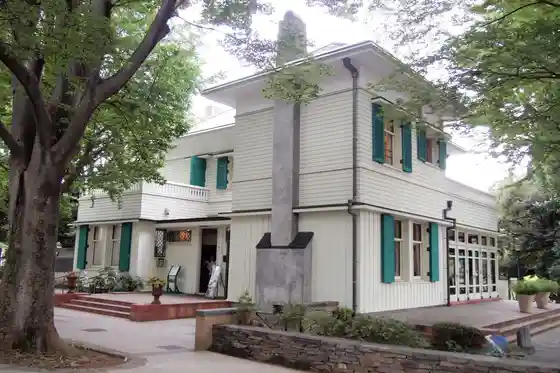
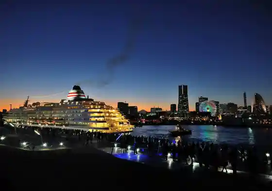
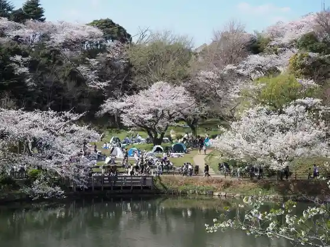
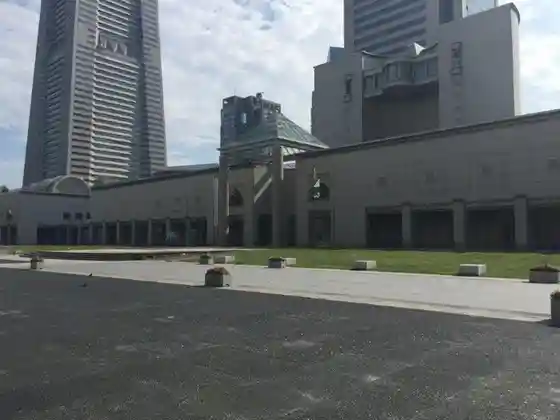

Erisuman Tei
Yokohama, Kanagawa · 045-211-1101 · Official / source link

Yokohama Minato Taisa N Hashi Yokohama Kokusai Kyakusen Taminaru
Yokohama, Kanagawa · 045-211-2304 · Official / source link

Kanagawa Prefectural San Tsu Ike Park
Yokohama, Kanagawa · 045-581-0287 · Official / source link

Guranmoru Park
Yokohama, Kanagawa · 045-671-3648 · Official / source link

Yokohama Sukaikuruzu
Yokohama, Kanagawa · 045-223-1155 · Official / source link
Zo no Hana Park
Yokohama, Kanagawa · Official / source link
Nihondai Tori
Yokohama, Kanagawa · Official / source link
Nihonmaru Memorial Park (Hansen Nihonmaru Yokohama Minato Museum)
Yokohama, Kanagawa · 045-221-0280 · Official / source link
Burafu 18 Ban Kan
Yokohama, Kanagawa · 045-662-6318 · Official / source link
Honmoku Sancho Park
Yokohama, Kanagawa · 045-622-2766 · Official / source link
Minato no Mie Ru Oka Park
Yokohama, Kanagawa · 045-671-3648 · Official / source link
Yokohama Minatomirai 21
Yokohama, Kanagawa · Official / source link
Yamashita Park
Yokohama, Kanagawa · 045-671-3648 · Official / source link
SEA BASS (Shiibasu)
Yokohama, Kanagawa · 045-662-6125 · Official / source link
Yokohama Land Makutawa
Yokohama, Kanagawa · 045-222-5030 · Official / source link
CIAL Tsurumi (Shiaru Tsurumi)
Yokohama, Kanagawa · 045-642-5020 · Official / source link
Kanagawaken Cho Honcho Sha
Yokohama, Kanagawa · 045-210-1111 · Official / source link
Kisha Michi
Yokohama, Kanagawa · 045-671-2888 · Official / source link
Hiroaki Tera Kannon
Yokohama, Kanagawa · 045-711-1231 · Official / source link
Sankeien
Yokohama, Kanagawa · 045-621-0635 · Official / source link
Noge Chiku
Yokohama, Kanagawa · Official / source link
Basha Michi
Yokohama, Kanagawa · 045-641-4068 · Official / source link
Biwa Shima Benzaiten
Yokohama, Kanagawa · 045-701-9992 · Official / source link
Berikku Horu
Yokohama, Kanagawa · Official / source link
Myoko Tera
Yokohama, Kanagawa · Official / source link
Yamate 111 Ban Kan
Yokohama, Kanagawa · 045-623-2957 · Official / source link
Yamate 234 Ban Kan
Yokohama, Kanagawa · 045-625-9393 · Official / source link
Yamate Itaria Yama Garden
Yokohama, Kanagawa · 045-662-8819 · Official / source link
Yokohama Aka Renga Soko
Yokohama, Kanagawa · 045-227-2002 · Official / source link
Yokohama Kaiko Museum
Yokohama, Kanagawa · 045-201-2100 · Official / source link
Yokohama Igirisu Kan
Yokohama, Kanagawa · 045-623-7812 · Official / source link
Yokohama San to
Yokohama, Kanagawa · Official / source link
Yokohama Zeikan
Yokohama, Kanagawa · 045-212-6300 · Official / source link
Gasu Tomoshibi Kinenhi
Yokohama, Kanagawa · Official / source link
Pia Aka Renga Sambashi
Yokohama, Kanagawa · Official / source link
Uma no Museum (Kyukanchu) (Negishi Keiba Kinen Park)
Yokohama, Kanagawa · 045-662-7581 · Official / source link
Gaikokan no Ie
Yokohama, Kanagawa · 045-662-8819 · Official / source link
Kyu Ito Hirofumi Kanazawa Bettei
Yokohama, Kanagawa · 045-788-1919 · Official / source link
Suzaki Shrine
Yokohama, Kanagawa · Official / source link
Seto Shrine
Yokohama, Kanagawa · Official / source link
Sojidera
Yokohama, Kanagawa · 045-581-6021 · Official / source link
Namamugi Jiken Hi to Namamugi Jiken Hasseibasho
Yokohama, Kanagawa · Official / source link
Shiruku Museum
Yokohama, Kanagawa · 045-641-0841 · Official / source link
Yokohama Haikara Kimo no Kan
Yokohama, Kanagawa · 045-663-8108 · Official / source link
Yokohama Nogakudo
Yokohama, Kanagawa · 045-263-3055 · Official / source link
Kamon Yama Park
Yokohama, Kanagawa · Official / source link
Ooka Kawa Kuruzu
Yokohama, Kanagawa · Official / source link
Yokohama Kokusai Sogo Kyogijo (Nissan Sutajiamu)
Yokohama, Kanagawa · 045-477-5000 · Official / source link
Shin Yokohama Ramen Museum
Yokohama, Kanagawa · 045-471-0503 · Official / source link
Yokohama Chukagai
Yokohama, Kanagawa · 045-662-1252 · Official / source link
Nissanjidosha Yokohama Kojo
Yokohama, Kanagawa · 045-461-7090 · Official / source link
Kappunudoru Museum Yokohama
Yokohama, Kanagawa · 045-345-0918 · Official / source link
Kirimbiiru Yokohama Kojo
Yokohama, Kanagawa · 045-503-8250 · Official / source link
Mitsubishi Minatomirai Gijutsukan
Yokohama, Kanagawa · 045-200-7351 · Official / source link
Yokohama Hakkei Shima Shiiparadaisu
Yokohama, Kanagawa · 045-788-8888 · Official / source link
Hara Tetsudomokei Museum
Yokohama, Kanagawa · 045-640-6699 · Official / source link
Fiirudoasurechikku Yokohama Tsukushi no Kosu
Yokohama, Kanagawa · 045-983-9254 · Official / source link
Yokohama Anpanman Kodomo Museum
Yokohama, Kanagawa · 045-227-8855 · Official / source link
Yokohama Kosumowarudo
Yokohama, Kanagawa · 045-641-6591 · Official / source link
Yokohama Zoo Zurashia
Yokohama, Kanagawa · 045-959-1000 · Official / source link
Su no Va Shin Yokohama
Yokohama, Kanagawa · 045-570-4141 · Official / source link
Noge Yama Zoo
Yokohama, Kanagawa · 045-231-1307 · Official / source link
MOONEYES Area-1
Yokohama, Kanagawa · 045-623-5959 · Official / source link
Segami City Tami Forest Daimaru Plaza
Yokohama, Kanagawa · 045-671-2624 · Official / source link
Taya no Cave (Tei Izumi Tera)
Yokohama, Kanagawa · 045-851-2392 · Official / source link
Negishi Forest Park
Yokohama, Kanagawa · 045-641-9185 · Official / source link
Noge Yama Park
Yokohama, Kanagawa · 045-231-1307 · Official / source link
Yokohama Park
Yokohama, Kanagawa · 045-671-3648 · Official / source link
Yokohama Nature Kansatsu Forest
Yokohama, Kanagawa · 045-894-7474 · Official / source link
Kanagawa Prefectural Sakaigawa Yusuichi Park
Yokohama, Kanagawa · 045-805-0223 · Official / source link
Rokkakubashi Shopping Street
Yokohama, Kanagawa · Official / source link
Namamugi Uogashi Tori
Yokohama, Kanagawa · Official / source link
Yokohama Ko Fuku Teramatsu Hara Shopping Street
Yokohama, Kanagawa · Official / source link
Mitsui Autoretto Park Yokohama Beisaido
Yokohama, Kanagawa · 045-775-4446 · Official / source link
Kanagawa Prefectural Kanazawa Bunko
Yokohama, Kanagawa · 045-701-9069 · Official / source link
Aisukuriimu Hassho no Hi
Yokohama, Kanagawa · Official / source link
Hakubi Kyoto Kimo no Gakuin
Yokohama, Kanagawa · 0120-032-999 · Official / source link
Nipponyusen Hikawamaru
Yokohama, Kanagawa · 045-641-4362 · Official / source link
Iseyama Ko Dai Shrine
Yokohama, Kanagawa · 045-241-1122 · Official / source link
Kanazawa Nature Park Kanazawa Zoo
Yokohama, Kanagawa · 045-783-9100 · Official / source link
Machiya Shrine
Yokohama, Kanagawa · Official / source link
Denwa Kokan Hassho no Kinenhi
Yokohama, Kanagawa · Official / source link
Miyagawa Kayama Sanekazura Museum
Yokohama, Kanagawa · 045-534-6853 · Official / source link
Ryuge Tera
Yokohama, Kanagawa · 045-701-6705 · Official / source link
Shomyo Tera
Yokohama, Kanagawa · Official / source link
Sukaidakku Yokohama (Suiriku Ryoyo Basu (Sukaidakku))
Yokohama, Kanagawa · 03-3215-0008 · Official / source link
Aka Renga café Kuruzu
Yokohama, Kanagawa · 045-290-8377 · Official / source link
Okurayama Memorial Museum
Yokohama, Kanagawa · 045-544-1881 · Official / source link
Katorikku Yamate Kyokai
Yokohama, Kanagawa · 045-641-0735 · Official / source link
Yokohama Yamate Hijiri Kokai / Yokohama Kuraisutochachi
Yokohama, Kanagawa · 045-622-0228 · Official / source link
Hiroaki Tera Shopping Street
Yokohama, Kanagawa · 045-741-4959 · Official / source link
Shiisaido Line
Yokohama, Kanagawa · Official / source link
Mariinruju
Yokohama, Kanagawa · 045-662-6125 · Official / source link
Tsurumi Shrine
Yokohama, Kanagawa · 045-501-4122 · Official / source link
Odori Park
Yokohama, Kanagawa · 045-671-3648 · Official / source link
Daikoku Umi Zuri Shisetsu
Yokohama, Kanagawa · 045-506-3539 · Official / source link
Yokohama no Village Seikatsu Kan Miso no Park (Yokomizo Residence)
Yokohama, Kanagawa · 045-574-1987 · Official / source link
Yokohama Narita Yama
Yokohama, Kanagawa · 045-231-4935 · Official / source link
Yokohama Machinaka Ato
Yokohama, Kanagawa · Official / source link
Minatomirai Bridge
Yokohama, Kanagawa · Official / source link
Nagaya Mon Park
Yokohama, Kanagawa · 045-364-7072 · Official / source link
Kodomo Nature Park (Oike Park Sakura no Machi)
Yokohama, Kanagawa · 045-353-1166 · Official / source link
Yacho Kansatsu Sono
Yokohama, Kanagawa · 045-782-8004 · Official / source link
Izumi Kawa
Yokohama, Kanagawa · 045-367-5632 · Official / source link
Aka Renga Park
Yokohama, Kanagawa · 045-226-1910 · Official / source link
Furansu Hashi
Yokohama, Kanagawa · Official / source link
Tsurumi Hashi Kanmon Kyuseki
Yokohama, Kanagawa · 045-510-1676 · Official / source link
Yokohama Marintawa
Yokohama, Kanagawa · 045-664-1100 · Official / source link
Okinawa Taun & Nambei Taun
Yokohama, Kanagawa · Official / source link
Niihari Satoyama Park Niiharu Satoyama Koryu Center
Yokohama, Kanagawa · 045-931-4947 · Official / source link
Ten'o Moriizumi Kan (Kyu Shimizu Seishi Ba Honkan)
Yokohama, Kanagawa · Official / source link
Magokorofamu
Yokohama, Kanagawa · 090-7275-777 · Official / source link
Jingashita Keikoku Park
Yokohama, Kanagawa · 045-353-1166 · Official / source link
Umi no Park
Yokohama, Kanagawa · 045-701-3450 · Official / source link
Yokohama Komyuniteisaikuru baybike
Yokohama, Kanagawa · 045-227-5176 · Official / source link
Kanazawa Nature Park
Yokohama, Kanagawa · 045-783-9100 · Official / source link
Nojima Park
Yokohama, Kanagawa · Official / source link
Kojo Yakei Jangurukuruzu
Yokohama, Kanagawa · 045-290-8377 · Official / source link
Yokohama Ningyo no Ie
Yokohama, Kanagawa · 045-671-9361 · Official / source link
Joinasu no Mori Chokoku Park
Yokohama, Kanagawa · 045-316-3200 · Official / source link
Sukaisupa YOKOHAMA
Yokohama, Kanagawa · 045-461-1126 · Official / source link
Toku Zen Tera
Yokohama, Kanagawa · Official / source link
Hozo Tera
Yokohama, Kanagawa · Official / source link
Zentsu In Seishi Do
Yokohama, Kanagawa · Official / source link
Yokohama Kantei Byo
Yokohama, Kanagawa · 090-3041-3251 · Official / source link
Hachi Seiden
Yokohama, Kanagawa · 045-622-2624 · Official / source link
Daimaru Yama (Kanazawa City Tami Forest)
Yokohama, Kanagawa · Official / source link
Yakatabune Hamashin
Yokohama, Kanagawa · 045-781-7377 · Official / source link
Kyubikku Plaza Shin Yokohama
Yokohama, Kanagawa · 045-478-2722 · Official / source link
Moto Town Shoppingusutoriito
Yokohama, Kanagawa · 045-641-1557 · Official / source link
Yokohama Yamate Tenisu Hassho Memorial Museum
Yokohama, Kanagawa · 045-681-8646 · Official / source link
Kyu Yamate 68 Ban Kan
Yokohama, Kanagawa · 045-641-1971 · Official / source link
Fujizuka Ato (Yokone Inari Higashigawa)
Yokohama, Kanagawa · Official / source link
San Tsu Sawa Park
Yokohama, Kanagawa · 045-548-5147 · Official / source link
Burari Noge Yama Zoo BUS
Yokohama, Kanagawa · 045-664-2525 · Official / source link
Yamate Museum
Yokohama, Kanagawa · 045-622-1188 · Official / source link
Tanito Saka
Yokohama, Kanagawa · Official / source link
Nomi Do Ato
Yokohama, Kanagawa · Official / source link
Fudo Ike
Yokohama, Kanagawa · Official / source link
Yatsu Kangatani Fudo Mikoto
Yokohama, Kanagawa · Official / source link
Kama Toshitani City Tami Forest
Yokohama, Kanagawa · Official / source link
Shi Sakai Plaza
Yokohama, Kanagawa · Official / source link
Neko Kafe (Reon)
Yokohama, Kanagawa · Official / source link
Maki Sushi Kyoshitsu (Gururi)
Yokohama, Kanagawa · 045-228-9030 · Official / source link
Nissan Gurobaru Honsha Gyararii
Yokohama, Kanagawa · 045-523-5555 · Official / source link
Daibutsu Jiro Memorial Museum
Yokohama, Kanagawa · 045-622-5002 · Official / source link
Hama no Jinrikisha
Yokohama, Kanagawa · 045-622-8146 · Official / source link
Kanagawa Prefectural Kanagawa Kindai Literature Museum
Yokohama, Kanagawa · 045-622-6666 · Official / source link
Nissan Enjin Museum
Yokohama, Kanagawa · 045-461-7090 · Official / source link
Yokohama Chiho Kishodai
Yokohama, Kanagawa · 045-621-1563 · Official / source link
Yokohama Den Hozon Kan
Yokohama, Kanagawa · 045-754-8505 · Official / source link
Dokkuyado Garden
Yokohama, Kanagawa · Official / source link
Hokubu Daini Mizu Saisei Center
Yokohama, Kanagawa · Official / source link
Ren Kokoro Kan Kantochiku Hombu Budo Karate Imai Dojo
Yokohama, Kanagawa · 090-8054-289 · Official / source link
TAIKO-LAB Shin Yokohama
Yokohama, Kanagawa · 045-471-6686 · Official / source link
O Hana DE O Hanashi Sogetsu Ryu Ikebana Sutajio fworks
Yokohama, Kanagawa · 090-5542-5354 · Official / source link
Awazu Benibana Shodo Juku
Yokohama, Kanagawa · 080-5470-0623 · Official / source link
Tsurumi Kawa Dote
Yokohama, Kanagawa · Official / source link
Zo no Hana Park Yamashita Rinkosen Puromunado Kokakyo
Yokohama, Kanagawa · Official / source link
Zo no Hana Terasu
Yokohama, Kanagawa · 045-661-0602 · Official / source link
Akaikutsu (Kanko Supotto Shuyu Basu)
Yokohama, Kanagawa · 045-664-2525 · Official / source link
Burari Sankeien BUS
Yokohama, Kanagawa · 045-664-2525 · Official / source link
Kanagawaken Antenashoppu (Kanagawa Ya)
Yokohama, Kanagawa · 045-620-8535 · Official / source link
Kosumokurokku 21
Yokohama, Kanagawa · 045-641-6591 · Official / source link
Isho Kenkyukai
Yokohama, Kanagawa · 045-565-9160 · Official / source link
Yokohama Ya
Yokohama, Kanagawa · 045-311-5111 · Official / source link
Yokohama Ingurisshu Garden
Yokohama, Kanagawa · 045-326-3670 · Official / source link
Saikurutorabereshon
Yokohama, Kanagawa · 045-620-3771 · Official / source link
Moto Town Kurafutomanshippu Sutoriito
Yokohama, Kanagawa · Official / source link
Kokonotsu I to Sato (Togei Garasu Workshop)
Yokohama, Kanagawa · 045-851-8855 · Official / source link
Mu Gen Iori MUGEN-AN
Yokohama, Kanagawa · 090-3247-7541 · Official / source link
San Dono Dai Iseki Koko Kan
Yokohama, Kanagawa · 045-761-4571 · Official / source link
Yokohama Tami Bosai Center (Experience Shisetsu : Saigai Shiata Nado)
Yokohama, Kanagawa · 045-312-0119 · Official / source link
Yamate Park
Yokohama, Kanagawa · Official / source link
YOKOHAMA SUP CLUB
Yokohama, Kanagawa · Official / source link
Aizawa Ryo Ranch Ogasutamiruku Farm
Yokohama, Kanagawa · 045-489-6211 · Official / source link
Kiyoken Yokohama Kojo
Yokohama, Kanagawa · 045-472-5890 · Official / source link
Yokohama Sutoroberii Park
Yokohama, Kanagawa · Official / source link
Sogo Yokohama Mise
Yokohama, Kanagawa · 045-465-2111 · Official / source link
Yamashita Town Park
Yokohama, Kanagawa · 045-641-7681 · Official / source link
Rinzai Shu Kencho Tera Ha Hakusan Toko Zendera
Yokohama, Kanagawa · 045-781-0271 · Official / source link
Isezaki Moru
Yokohama, Kanagawa · Official / source link
Maioka Park
Yokohama, Kanagawa · 045-824-0107 · Official / source link
Kanagawa Prefectural History Museum
Yokohama, Kanagawa · 045-201-0926 · Official / source link
Shin Yokohama Park (Kusachi Plaza)
Yokohama, Kanagawa · 045-477-5000 · Official / source link
MEGA Don Kihote Minato Yamashita So Main Shop
Yokohama, Kanagawa · 0570-090-711 · Official / source link
Yukata De Dinakuruzu
Yokohama, Kanagawa · 045-663-8108 · Official / source link
Ooka Kawa Puromunado
Yokohama, Kanagawa · Official / source link
Yokohama Harutoshi Kai
Yokohama, Kanagawa · 045-681-5588 · Official / source link
Yokohama Hakuran Kan
Yokohama, Kanagawa · 045-640-0081 · Official / source link
Yokohama Maso Byo
Yokohama, Kanagawa · 045-681-0909 · Official / source link
Yokohama Chuo Oroshiuri Market
Yokohama, Kanagawa · Official / source link
Yokohama Beikuota
Yokohama, Kanagawa · 045-577-8123 · Official / source link
Fukugogata Entame Shisetsu (Asobiru)
Yokohama, Kanagawa · Official / source link
MARINE & WALK YOKOHAMA
Yokohama, Kanagawa · 045-680-6101 · Official / source link
Kuiinzusukuea Yokohama
Yokohama, Kanagawa · 045-682-1000 · Official / source link
Rinko Park
Yokohama, Kanagawa · 045-221-2155 · Official / source link
Nojima Koen Lookout
Yokohama, Kanagawa · Official / source link
Negishi Natsukashi Park Kyu Yagishita Tei
Yokohama, Kanagawa · 045-750-5022 · Official / source link
Honmoku City Tami Rinkai Park
Yokohama, Kanagawa · 045-623-8747 · Official / source link
Yokohama Gaikokujin Bochi
Yokohama, Kanagawa · 045-622-1311 · Official / source link
Y Cruise Shiibasu Kojo Yakei Kuruzu
Yokohama, Kanagawa · 045-662-6125 · Official / source link
BOATRACE TICKETSHOP Botopia Yokohama
Yokohama, Kanagawa · 045-227-1173 · Official / source link
Yoshida Town Meitengai
Yokohama, Kanagawa · Official / source link
Noge Tabemo no Alley
Yokohama, Kanagawa · 045-315-6107 · Official / source link
Miyako Hashi Shopping Street (Hamonika Alley)
Yokohama, Kanagawa · Official / source link
Hiroaki Tera Park
Yokohama, Kanagawa · Official / source link
Kuro Yu Tennen Onsen Miura Yu Hiroaki Tera Mise
Yokohama, Kanagawa · 045-710-1126 · Official / source link
Shirahata Shindai Wari Jizo Mikoto
Yokohama, Kanagawa · Official / source link
Shirahata Ike Park
Yokohama, Kanagawa · Official / source link
Honmoku Shrine
Yokohama, Kanagawa · 045-621-7611 · Official / source link
Ritoru Okinawa
Yokohama, Kanagawa · Official / source link
Yokohama Chuoyubinkyoku Yokohama Kitte Kan
Yokohama, Kanagawa · Official / source link
Sogo Art Museum
Yokohama, Kanagawa · Official / source link
Shiseido S/PARK
Yokohama, Kanagawa · Official / source link
Moto Town Hyaku Dan Park
Yokohama, Kanagawa · 045-641-7681 · Official / source link
Yokohama Kodomo Botanical Garden
Yokohama, Kanagawa · 045-741-1015 · Official / source link
Pashifiko Yokohama
Yokohama, Kanagawa · Official / source link
Kodo Yamamoto Butsuden
Yokohama, Kanagawa · Official / source link
Yokohama Hashi Tori Shopping Street
Yokohama, Kanagawa · 045-231-0286 · Official / source link
Rizabudokuruzu
Yokohama, Kanagawa · 045-290-8377 · Official / source link
Yokohama Ariina
Yokohama, Kanagawa · Official / source link
Yokohama Minatomirai Horu
Yokohama, Kanagawa · 045-682-2020 · Official / source link
Yokohama Yakei Fantasuteikkukafeshippu
Yokohama, Kanagawa · 045-290-8377 · Official / source link
Keikyu Museum
Yokohama, Kanagawa · 045-225-9696 · Official / source link
NISSAN STAR SUITES (Yokohama Sutajiamu)
Yokohama, Kanagawa · 045-663-7117 · Official / source link
Pia Ariina MM
Yokohama, Kanagawa · Official / source link
YOKOHAMA AIR CABIN®
Yokohama, Kanagawa · 045-319-4931 · Official / source link
Beisaidoburu (Rensetsu Basu)
Yokohama, Kanagawa · 045-671-3211 · Official / source link
Fukugo Shogyo Shisetsu (BRANCH Yokohama Nambu Market)
Yokohama, Kanagawa · 045-374-5392 · Official / source link
Mulabo! (Murabo !)
Yokohama, Kanagawa · 045-227-3011 · Official / source link
Anitatchi Minatomirai
Yokohama, Kanagawa · Official / source link
Konikami no Rutapuranetaria YOKOHAMA
Yokohama, Kanagawa · 045-264-4592 · Official / source link
KitchenGATE (Kitchingeto) Yokohama Nichi no Shutsu Town
Yokohama, Kanagawa · 090-6108-356 · Official / source link
Kawasaki Cho Kojo Yakei Kuruzu
Yokohama, Kanagawa · 050-1790-7606 · Official / source link
DREAM DOOR YOKOHAMA HAMMERHEAD
Yokohama, Kanagawa · Official / source link
Bebiisuta Land
Yokohama, Kanagawa · 045-640-0081 · Official / source link
BankART Station
Yokohama, Kanagawa · 045-663-2812 · Official / source link
Bandainamuko Cross Store
Yokohama, Kanagawa · Official / source link
Foresutoadobencha
Yokohama, Kanagawa · 090-4750-0720 · Official / source link
Kanagawa Prefectural Kenmin Horu Honkan
Yokohama, Kanagawa · 045-662-5901 · Official / source link
KAAT Kanagawa Geijutsugekijo
Yokohama, Kanagawa · 045-633-6500 · Official / source link
Kanagawa Prefectural Kobunsho Kan
Yokohama, Kanagawa · 045-364-4454 · Official / source link
Kanagawa Prefectural Chikyu City Tami Kanagawa Plaza
Yokohama, Kanagawa · 045-896-2121 · Official / source link
Kanagawa Prefectural Ongakudo
Yokohama, Kanagawa · 045-263-2567 · Official / source link
Kanagawa Prefectural Seishonen Center
Yokohama, Kanagawa · 045-263-4400 · Official / source link
Kanagawa Prefectural Kanagawa Atohoru
Yokohama, Kanagawa · 045-341-7657 · Official / source link
Kanagawa Prefectural Supotsu Hall
Yokohama, Kanagawa · 045-311-7871 · Official / source link
Shinkosupotsu Kanagawa Prefectural Budokan
Yokohama, Kanagawa · 045-491-4321 · Official / source link
Yokohama Hanmaheddo
Yokohama, Kanagawa · 045-211-8080 · Official / source link
Yokohama Marintawa Kankojigyo Mono Muke UV
Yokohama, Kanagawa · 045-681-0007 · Official / source link
Hodogaya Park
Yokohama, Kanagawa · 045-333-5515 · Official / source link
Kanagawa Prefectural Shiki no Mori Park
Yokohama, Kanagawa · 045-931-7910 · Official / source link
Okurayama Park
Yokohama, Kanagawa · 045-353-1166 · Official / source link
Kanagawaken Sembotsu Mono Irei Do
Yokohama, Kanagawa · 045-842-4243 · Official / source link
O Kashi Tsukasa Okurayama Aoyagi
Yokohama, Kanagawa · 045-531-0407 · Official / source link
Basha Michi Juban Kan
Yokohama, Kanagawa · 045-651-2621 · Official / source link
Yokohama Karo Habazumun Ariake Honkan
Yokohama, Kanagawa · 045-210-9778 · Official / source link
Sumibi Izakaya Momo
Yokohama, Kanagawa · 045-250-4129 · Official / source link
Yu Shima Sushi
Yokohama, Kanagawa · 045-590-0317 · Official / source link
Kiyoken Yokohama Ekinaka O Mise
Yokohama, Kanagawa · 045-441-2525 · Official / source link
Na Kaori Shinkan
Yokohama, Kanagawa · 050-3196-2794 · Official / source link
Goku Cha So
Yokohama, Kanagawa · 045-681-7776 · Official / source link
Edo Kiyoshi Chukagai Main Shop
Yokohama, Kanagawa · 0120-047-290 · Official / source link
Mitsuyuki En Noge Mise
Yokohama, Kanagawa · 045-231-4450 · Official / source link
Gyokusen Tei Yokohama Poruta Mise
Yokohama, Kanagawa · 045-453-6600 · Official / source link
Kakei Sohonzan Kichi Village Ie
Yokohama, Kanagawa · 045-322-9988 · Official / source link
Ramen Kan 2 Ie
Yokohama, Kanagawa · 045-825-3195 · Official / source link
Hama Ko
Yokohama, Kanagawa · 045-881-7811 · Official / source link
Arai Ya Main Shop
Yokohama, Kanagawa · 045-251-5001 · Official / source link
Ja no Meya
Yokohama, Kanagawa · 045-251-0832 · Official / source link
Yokohama Shigeta
Yokohama, Kanagawa · 045-261-0634 · Official / source link
Intakonchinentaru Yokohama Pier 8 InterContinental Yokohama Pier 8
Yokohama, Kanagawa · 045-307-1111 · Official / source link
Yokohama Art Museum
Yokohama, Kanagawa · 045-221-0300 · Official / source link
Center Minami Onsen Yu Momi Village
Yokohama, Kanagawa · 045-942-2611 · Official / source link
Kodomo no Kuni
Yokohama, Kanagawa · 045-961-2111 · Official / source link
Yokohama Yakatabune Seigi Maru Kankojigyo Mono Muke UV
Yokohama, Kanagawa · 070-9222-5020 · Official / source link
Yokohama Park no Churippu
Yokohama, Kanagawa · 045-671-3648 · Official / source link
MYSTERY OF TUTANKHAMEN/ Misuterii Obu Tsutankamen Taikan Kata Kodai Ejiputo Ten
Yokohama, Kanagawa · Official / source link
Yokohama Hakkei Shima Shiiparadaisu Kankojigyo Mono Muke UV
Yokohama, Kanagawa · 045-681-0007 · Official / source link
Yokohama Chukagai Jogen Ro (Pâtissières JOGENRO)
Yokohama, Kanagawa · 045-305-6880 · Official / source link
Minatomirai Sakura Tori Cherry Blossoms
Yokohama, Kanagawa · Official / source link
Yamate Itaria Yama Garden no Bara
Yokohama, Kanagawa · 045-662-8819 · Official / source link
Yokohama Chunagon Nihondai Tori
Yokohama, Kanagawa · 045-264-4976 · Official / source link
Fantajiikizzu Resort Kohoku Mise
Yokohama, Kanagawa · 045-482-4455 · Official / source link
Hapipi Land Yokohama Asobiru Mise
Yokohama, Kanagawa · 045-594-9493 · Official / source link
Hapipi Land Rurara Kohoku Mise
Yokohama, Kanagawa · 045-534-6304 · Official / source link
Land Maku Plaza (Yokobaru)
Yokohama, Kanagawa · Official / source link
Hamagin Kodomo Uchu Science Museum
Yokohama, Kanagawa · 045-832-1166 · Official / source link
Yokohama Honmoku City Tami Puru
Yokohama, Kanagawa · 045-396-9275 · Official / source link
Shinka Resutoran (SMOKE DOOR) (Natsu Gentei ! Shitsunai Bia Garden)
Yokohama, Kanagawa · 045-534-8172 · Official / source link
Kanagawa Prefectural San Tsu Ike Koen Puru
Yokohama, Kanagawa · 045-570-0087 · Official / source link
Kanagawa Prefectural Shiki no Mori Park Jabujabu Ike
Yokohama, Kanagawa · 045-931-7910 · Official / source link
Kanagawa Prefectural Hodogaya Koen Puru
Yokohama, Kanagawa · 045-333-5515 · Official / source link
Yokohama Kaiun Aquarium Fochun'akuariumu
Yokohama, Kanagawa · Official / source link
CRAFT. BankPark YOKOHAMA
Yokohama, Kanagawa · 070-6985-2192 · Official / source link
THE WHARF HOUSE YAMASHITA KOEN Za Wafuhausu Yamashitakoen Kankojigyo Mono Muke UV
Yokohama, Kanagawa · Official / source link
Chukagai Oi Mise
Yokohama, Kanagawa · 045-227-9888 · Official / source link
Fukahire Senmonten Ko Sho Ki Shinkan
Yokohama, Kanagawa · 045-680-5858 · Official / source link
Hadorokkukafe Yokohama
Yokohama, Kanagawa · 045-682-5626 · Official / source link
Arai Ya Bankoku Hashi Mise
Yokohama, Kanagawa · 045-226-5003 · Official / source link
Itariandainingukariina
Yokohama, Kanagawa · 045-650-3372 · Official / source link
Tomi Yasushi Ro Main Shop
Yokohama, Kanagawa · 045-663-2345 · Official / source link
Aji Na to Iori Honmoku Mise
Yokohama, Kanagawa · 045-624-0402 · Official / source link
Shanhai Ryori Jogen Ro Yokohama Chukagai Main Shop
Yokohama, Kanagawa · 045-641-8888 · Official / source link
Kiyoken Main Shop Ka Miya
Yokohama, Kanagawa · 045-441-3330 · Official / source link
Kiyoken Main Shop Irusajjio
Yokohama, Kanagawa · 045-441-3331 · Official / source link
Kiyoken Main Shop Aboriitamu
Yokohama, Kanagawa · 045-441-8765 · Official / source link
Kiyoken Main Shop A Ri Tomoe " Tomoe "
Yokohama, Kanagawa · 045-441-8720 · Official / source link
Y Cruise Mariinruju
Yokohama, Kanagawa · 045-662-6125 · Official / source link
Jukei Hanten Shinkan Koshitsu
Yokohama, Kanagawa · 045-681-2993 · Official / source link
Burasurii Miriira Fore
Yokohama, Kanagawa · 045-681-2916 · Official / source link
Teppanyaki Hama
Yokohama, Kanagawa · 045-681-2993 · Official / source link
Mitsui Shoppingu Park Rarapoto Yokohama
Yokohama, Kanagawa · 045-931-1000 · Official / source link
Bei Byu
Yokohama, Kanagawa · 045-411-1111 · Official / source link
Teppanyaki (Sagami)
Yokohama, Kanagawa · 045-411-1111 · Official / source link
Orudeidainingu (Konpasu)
Yokohama, Kanagawa · 045-411-1111 · Official / source link
Nihonryori (Ki no Hana)
Yokohama, Kanagawa · 045-411-1111 · Official / source link
Chi Kita Yokohama Nishiguchi Mise
Yokohama, Kanagawa · 045-311-0185 · Official / source link
Chi Kita Tei Wa
Yokohama, Kanagawa · 045-227-7255 · Official / source link
Chugokuryori (Sai Ryu)
Yokohama, Kanagawa · 045-411-1111 · Official / source link
Raunji (Shiiuindo)
Yokohama, Kanagawa · 045-411-1111 · Official / source link
Ba (Bei Uesuto)
Yokohama, Kanagawa · 045-411-1111 · Official / source link
Sanmarukukafe Yokohama Warudopotazu Mise
Yokohama, Kanagawa · 045-594-6309 · Official / source link
BACKYARD Minatomirai
Yokohama, Kanagawa · 090-1767-9105 · Official / source link
Keiyu Burukku (Keiyu Byoin Mise)
Yokohama, Kanagawa · 045-221-8170 · Official / source link
Ritoruseman
Yokohama, Kanagawa · 045-453-6532 · Official / source link
Mizu Shin Burukku & Fakutorii
Yokohama, Kanagawa · 045-263-9812 · Official / source link
Mizu Shin Furutsupararabo
Yokohama, Kanagawa · 045-228-9297 · Official / source link
GATHER@EATINGHOUSE
Yokohama, Kanagawa · 045-323-9005 · Official / source link
Saizeriya Yokohama Warudopotazu
Yokohama, Kanagawa · 045-228-2103 · Official / source link
Kamakura Pasuta Yokohama Warudopotazu Mise
Yokohama, Kanagawa · 045-222-7752 · Official / source link
Raunji & Ba (Marimburu)
Yokohama, Kanagawa · 045-223-2332 · Official / source link
Buffe Dainingu (Oshanterasu)
Yokohama, Kanagawa · 045-223-2267 · Official / source link
Furansu Ryori (Ajuru)
Yokohama, Kanagawa · 045-223-2267 · Official / source link
Chugokuryori (Karyu)
Yokohama, Kanagawa · 045-223-2267 · Official / source link
Intakonchinentaru Yokohama Pier8 Sushi Tokoro (Katabami)
Yokohama, Kanagawa · 045-307-2228 · Official / source link
Harbor Kitchen
Yokohama, Kanagawa · 045-222-0121 · Official / source link
MILANO|GRILL
Yokohama, Kanagawa · 045-222-0121 · Official / source link
The Union Bar & Lounge
Yokohama, Kanagawa · 045-222-0121 · Official / source link
Kafe Tosuka
Yokohama, Kanagawa · 045-682-2255 · Official / source link
Kuiin Arisu
Yokohama, Kanagawa · 045-682-2255 · Official / source link
Sutsuanresutoran Chin
Yokohama, Kanagawa · 045-682-2255 · Official / source link
Taishi Man
Yokohama, Kanagawa · 045-682-2255 · Official / source link
Somahausu
Yokohama, Kanagawa · 045-682-2255 · Official / source link
Jakkusu
Yokohama, Kanagawa · 045-682-2255 · Official / source link
PACIFIC TABLE
Yokohama, Kanagawa · 045-577-0870 · Official / source link
Aian Bei
Yokohama, Kanagawa · 045-577-0870 · Official / source link
Robiiraunji
Yokohama, Kanagawa · 045-577-0870 · Official / source link
Kodo Ba
Yokohama, Kanagawa · 045-577-0870 · Official / source link
Shita Town DINING & CAFE THE sea
Yokohama, Kanagawa · 045-210-0781 · Official / source link
Bisutorochaina (ENCORE)
Yokohama, Kanagawa · 045-663-0109 · Official / source link
Kafe & Resutoran Shiruku
Yokohama, Kanagawa · 045-661-2580 · Official / source link
Jukei Hanten Shinkan Resutoran
Yokohama, Kanagawa · 045-681-6885 · Official / source link
Bishoku Kome Mon Yokohama
Yokohama, Kanagawa · 045-222-2520 · Official / source link
Unko Museum YOKOHAMA BAY
Yokohama, Kanagawa · Official / source link
2026 Nen Natsu OPEN! CAPCOMIX Minatomirai Mise
Yokohama, Kanagawa · Official / source link
Yokohama Marinrogatto
Yokohama, Kanagawa · Official / source link